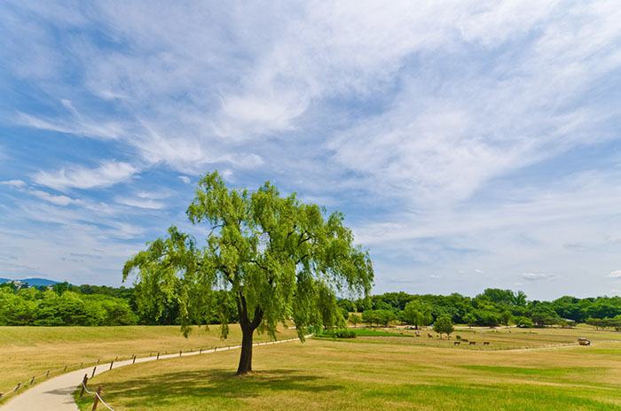
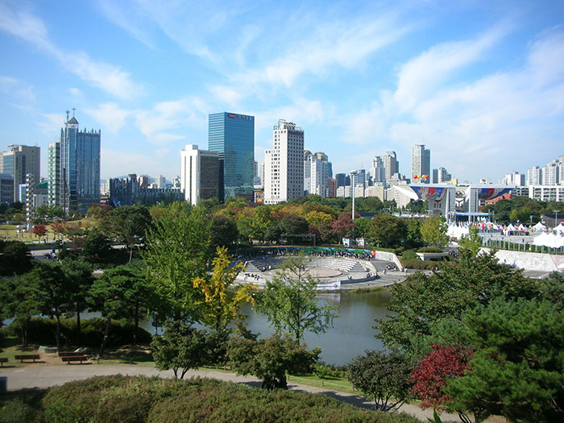

HOME>역사즐기기>공원조성배경
공원조성배경
-
- 88서울올림픽의 숨결이 살아 있는 올림픽공원
- 88서울올림픽의 정신과 가치를 계승 발전시키고 있는 국민체육진흥공단에서 운영 관리하는 시민들의 체육,문화,여가의 공간
- 
- 
-
88서울올림픽의 숨결이 살아 있는 올림픽공원은 곳곳에 산재해 있는 올림픽기념 조형물과 야외 조각작품들, 고대 백제의 유적지인 몽촌토성을 중심으로 드넓은 잔디와 몽촌해자, 그리고 쾌적한 자연환경속에 잘 정돈된 평화의광장을 비롯한 크고 작은 야외광장, 행사 규모별로 수용할 수 있는 KSPO DOME(올림픽체조경기장), SK핸드볼경기장(올림픽펜싱경기장), 우리금융아트홀(올림픽역도경기장), 올림픽홀(뮤즈라이브), K-아트홀이 있어 어떠한 행사도 충실히 수행할 수 있는 조건을 고루 갖추고 있습니다.
특히, 43만평의 넓은 공간에 자연녹지와 올림픽시설물들이 잘 조화를 이루고 있어 지하철 등 대중교통을 이용하기에 매우 편리한 도심속에 자리하고 있으며 각종 경기, 대형 콘서트, 이벤트 뿐만 아니라 수려한 경관을 배경으로 CF, 영화등 야외촬영 장소로도 아주 좋습니다. 올림픽공원은 88서울올림픽의 정신과 가치를 계승 발전시키고 있는 국민체육진흥공단에서 운영 관리하는 시민들의 체육, 문화, 여가의 공간입니다.